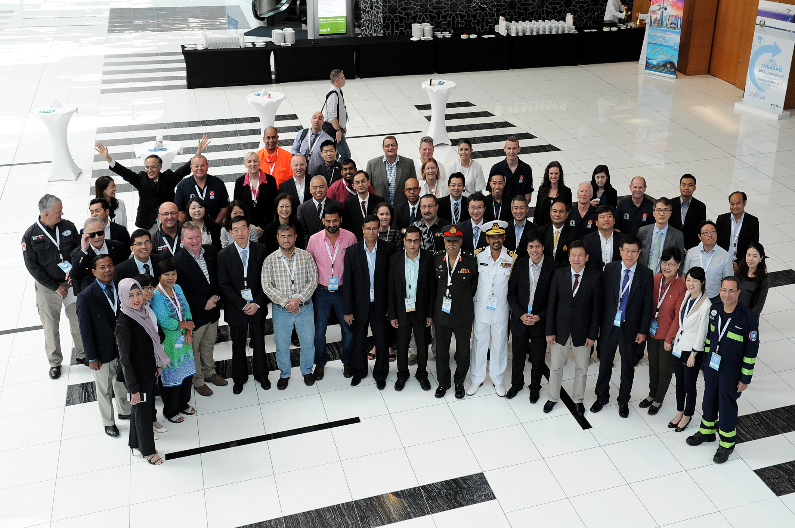

70 participants from 21 countries and organizations (will be finalized later) working on urban search and rescue (USAR) gathered for the annual International Search and Rescue Advisory Group (INSARAG) Asia-Pacific (A-P) Regional Meeting in Abu Dhabi, United Arab Emirates (UAE), on 20 October, 2015.
The meeting was hosted by The Ministry of Interior of the Government of the United Arab Emirates and New Zealand (NZ) the Regional Chair 2015, and co-organised by OCHA in its capacity as the INSARAG Secretariat that is located in the Field Coordination Support Section (FCSS) in the Emergency Services Branch (ESB) of OCHA Geneva.
Chairman Summary of Asia Pacific Regional Meeting 2015
Popowerpoint slides used in the meeting
